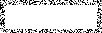

✧ sam lloyd ✧

Sydney Opera House
Brand
You probably wouldn’t expect the Sydney Opera House to have any problems attracting an audience. Yet when we started working with them back in 2014, we realised they were facing exactly that. So with a challenge to change perceptions and a vision of a sculptural form language, we set out to create a brand that could live up to the building.


With its iconic sails and incredible performances, the Sydney Opera House has long been one of the world’s most loved buildings. But it had its problems. It was finding it hard to communicate with its audiences. There was no thread uniting its different experiences, departments and partners. And while more people were visiting than ever before, most simply snapped a selfie outside. They weren’t actually coming in. We needed to find the Sydney Opera House’s voice, and let people know that although things look great from the harbour, the real magic happens inside.
So we created Shifting Perspectives — a brand idea that inspires conversation around culture and art, and helps visitors understand there’s more to the Sydney Opera House than opera. Paired with Shifting Perspectives is a sculptural form language. Sails are used to draw attention and interact with photography, while the three-dimensional typeface reflects the contours of the building itself. Together, they complement the content of any show poster or message, before bringing the focus back to the master brand.